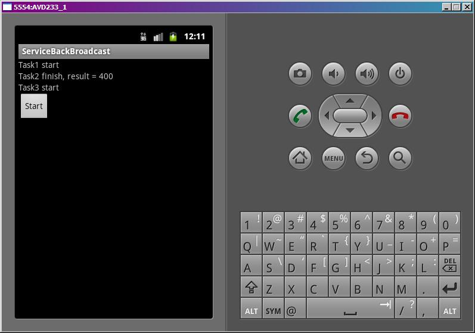
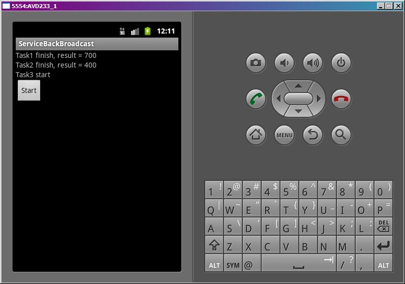

В этом уроке:
- получаем из сервиса результат с помощью BroadcastReceiver
В прошлом уроке мы использовали PendingIntent для получения обратной связи от сервиса. В этом уроке для этой же цели используем BroadcastReceiver.
Схема такая:
- в Activity создаем BroadcastReceiver, а также создаем IntentFilter, настроенный на определенный Action, и регистрируем (включаем) эту пару. Теперь BroadcastReceiver будет получать Intent-ы подходящие под условия IntentFilter
- в сервисе, когда нам понадобится передать данные в Activity, мы создаем Intent (с Action из предыдущего пункта), кладем в него данные, которые хотим передать, и посылаем его на поиски BroadcastReceiver
- BroadcastReceiver в Activity ловит этот Intent и извлекает из него данные
Т.е. тут все аналогично вызовам Activity с использованием Action и IntentFilter. Если Action в Intent (отправленном из сервиса) и в IntentFilter (у BroadcastReceiver в Activity) совпадут, то BroadcastReceiver получит этот Intent и сможет извлечь данные для Activity.
Пример сделаем полностью аналогичный прошлому уроку. У нас будет приложение, которое будет отправлять в сервис на выполнение три задачи. А сервис будет информировать, когда он начал каждую задачу выполнять, когда закончил и с каким результатом. Все это будем выводить на экран Activity.
Создадим проект:
Project name: P0961_ServiceBackBroadcast
Build Target: Android 4.0
Application name: ServiceBackBroadcast
Package name: ru.startandroid.develop.p0961servicebackbroadcast
Create Activity: MainActivity
Добавим в strings.xml строки:
<string name="start">Start</string>Экран main.xml:
<?xml version="1.0" encoding="utf-8"?>
<LinearLayout
xmlns:android="http://schemas.android.com/apk/res/android"
android:layout_width="fill_parent"
android:layout_height="fill_parent"
android:orientation="vertical">
<TextView
android:id="@+id/tvTask1"
android:layout_width="fill_parent"
android:layout_height="wrap_content"
android:text="">
</TextView>
<TextView
android:id="@+id/tvTask2"
android:layout_width="fill_parent"
android:layout_height="wrap_content"
android:text="">
</TextView>
<TextView
android:id="@+id/tvTask3"
android:layout_width="fill_parent"
android:layout_height="wrap_content"
android:text="">
</TextView>
<Button
android:id="@+id/btnStart"
android:layout_width="wrap_content"
android:layout_height="wrap_content"
android:onClick="onClickStart"
android:text="@string/start">
</Button>
</LinearLayout>Три TextView, в которые будем выводить инфу, поступающую из сервиса. И кнопка старта сервиса.
Создаем класс для сервиса MyService.java. И пропишем его в манифесте. Пока в нем ничего не кодим.
MainActivity.java:
package ru.startandroid.develop.p0961servicebackbroadcast;
import android.app.Activity;
import android.content.BroadcastReceiver;
import android.content.Context;
import android.content.Intent;
import android.content.IntentFilter;
import android.os.Bundle;
import android.util.Log;
import android.view.View;
import android.widget.TextView;
public class MainActivity extends Activity {
final String LOG_TAG = "myLogs";
final int TASK1_CODE = 1;
final int TASK2_CODE = 2;
final int TASK3_CODE = 3;
public final static int STATUS_START = 100;
public final static int STATUS_FINISH = 200;
public final static String PARAM_TIME = "time";
public final static String PARAM_TASK = "task";
public final static String PARAM_RESULT = "result";
public final static String PARAM_STATUS = "status";
public final static String BROADCAST_ACTION = "ru.startandroid.develop.p0961servicebackbroadcast";
TextView tvTask1;
TextView tvTask2;
TextView tvTask3;
BroadcastReceiver br;
/** Called when the activity is first created. */
@Override
public void onCreate(Bundle savedInstanceState) {
super.onCreate(savedInstanceState);
setContentView(R.layout.main);
tvTask1 = (TextView) findViewById(R.id.tvTask1);
tvTask1.setText("Task1");
tvTask2 = (TextView) findViewById(R.id.tvTask2);
tvTask2.setText("Task2");
tvTask3 = (TextView) findViewById(R.id.tvTask3);
tvTask3.setText("Task3");
// создаем BroadcastReceiver
br = new BroadcastReceiver() {
// действия при получении сообщений
public void onReceive(Context context, Intent intent) {
int task = intent.getIntExtra(PARAM_TASK, 0);
int status = intent.getIntExtra(PARAM_STATUS, 0);
Log.d(LOG_TAG, "onReceive: task = " + task + ", status = " + status);
// Ловим сообщения о старте задач
if (status == STATUS_START) {
switch (task) {
case TASK1_CODE:
tvTask1.setText("Task1 start");
break;
case TASK2_CODE:
tvTask2.setText("Task2 start");
break;
case TASK3_CODE:
tvTask3.setText("Task3 start");
break;
}
}
// Ловим сообщения об окончании задач
if (status == STATUS_FINISH) {
int result = intent.getIntExtra(PARAM_RESULT, 0);
switch (task) {
case TASK1_CODE:
tvTask1.setText("Task1 finish, result = " + result);
break;
case TASK2_CODE:
tvTask2.setText("Task2 finish, result = " + result);
break;
case TASK3_CODE:
tvTask3.setText("Task3 finish, result = " + result);
break;
}
}
}
};
// создаем фильтр для BroadcastReceiver
IntentFilter intFilt = new IntentFilter(BROADCAST_ACTION);
// регистрируем (включаем) BroadcastReceiver
registerReceiver(br, intFilt);
}
@Override
protected void onDestroy() {
super.onDestroy();
// дерегистрируем (выключаем) BroadcastReceiver
unregisterReceiver(br);
}
public void onClickStart(View v) {
Intent intent;
// Создаем Intent для вызова сервиса,
// кладем туда параметр времени и код задачи
intent = new Intent(this, MyService.class).putExtra(PARAM_TIME, 7)
.putExtra(PARAM_TASK, TASK1_CODE);
// стартуем сервис
startService(intent);
intent = new Intent(this, MyService.class).putExtra(PARAM_TIME, 4)
.putExtra(PARAM_TASK, TASK2_CODE);
startService(intent);
intent = new Intent(this, MyService.class).putExtra(PARAM_TIME, 6)
.putExtra(PARAM_TASK, TASK3_CODE);
startService(intent);
}
}В onCreate находим TextView и присваиваем им начальные тексты. Далее создаем BroadcastReceiver и реализуем в нем метод onReceive. Все Intent-ы, которые получит BroadcastReceiver, будут переданы в этот метод нам на обработку. Мы извлекаем из Intent-а данные о задаче (код и статус) и меняем информацию о ней в соответствующем TextView. Если пришел статус STATUS_START – задача начала работу. Если STATUS_FINISH – закончила работу и Intent должен содержать результат (PARAM_RESULT).
Далее мы создаем IntentFilter и настраиваем его на Action = MainActivity.BROADCAST_ACTION. В сервисе мы будем создавать Intent с тем же Action и отправлять на поиски. В итоге они должны состыковаться.
Регистрируем BroadcastReceiver методом registerReceiver, передаем туда IntentFilter. Теперь BroadcastReceiver включен и ждет подходящих Intent.
В методе onDestroy мы дерегистрируем (выключаем) BroadcastReceiver методом unregisterReceiver.
В onClickStart мы создаем Intent-ы, помещаем в них данные о длительности паузы и код задачи и отправляем в сервис.
Теперь кодим сервис.
MyService.java:
package ru.startandroid.develop.p0961servicebackbroadcast;
import java.util.concurrent.ExecutorService;
import java.util.concurrent.Executors;
import java.util.concurrent.TimeUnit;
import android.app.Service;
import android.content.Intent;
import android.os.IBinder;
import android.util.Log;
public class MyService extends Service {
final String LOG_TAG = "myLogs";
ExecutorService es;
public void onCreate() {
super.onCreate();
Log.d(LOG_TAG, "MyService onCreate");
es = Executors.newFixedThreadPool(2);
}
public void onDestroy() {
super.onDestroy();
Log.d(LOG_TAG, "MyService onDestroy");
}
public int onStartCommand(Intent intent, int flags, int startId) {
Log.d(LOG_TAG, "MyService onStartCommand");
int time = intent.getIntExtra(MainActivity.PARAM_TIME, 1);
int task = intent.getIntExtra(MainActivity.PARAM_TASK, 0);
MyRun mr = new MyRun(startId, time, task);
es.execute(mr);
return super.onStartCommand(intent, flags, startId);
}
public IBinder onBind(Intent arg0) {
return null;
}
class MyRun implements Runnable {
int time;
int startId;
int task;
public MyRun(int startId, int time, int task) {
this.time = time;
this.startId = startId;
this.task = task;
Log.d(LOG_TAG, "MyRun#" + startId + " create");
}
public void run() {
Intent intent = new Intent(MainActivity.BROADCAST_ACTION);
Log.d(LOG_TAG, "MyRun#" + startId + " start, time = " + time);
try {
// сообщаем об старте задачи
intent.putExtra(MainActivity.PARAM_TASK, task);
intent.putExtra(MainActivity.PARAM_STATUS, MainActivity.STATUS_START);
sendBroadcast(intent);
// начинаем выполнение задачи
TimeUnit.SECONDS.sleep(time);
// сообщаем об окончании задачи
intent.putExtra(MainActivity.PARAM_STATUS, MainActivity.STATUS_FINISH);
intent.putExtra(MainActivity.PARAM_RESULT, time * 100);
sendBroadcast(intent);
} catch (InterruptedException e) {
e.printStackTrace();
}
stop();
}
void stop() {
Log.d(LOG_TAG, "MyRun#" + startId + " end, stopSelfResult("
+ startId + ") = " + stopSelfResult(startId));
}
}
}Как и в прошлом уроке, используем экзекутор (на два потока) для параллельного выполнения задач.
В методе run класса MyRun будем, как обычно, ставить паузу и сообщать в Activity о начале и завершении задачи.
Чтобы отправить данные в Activity, создаем Intent с Action = MainActivity.BROADCAST_ACTION и помещаем в него данные, которые хотим передать. Чтобы передать информацию о том, что задача начала работать, мы передаем код задачи (task) и статус начала (MainActivity.STATUS_START). И методом sendBroadcast отправляем Intent искать подходящий BroadcastReceiver. Он найдется в нашем Activity, обработает Intent и обновит инфу о задачах в TextView.
Чтобы передать информацию о том, что задача закончила работу, мы передаем статус завершения (MainActivity. STATUS_FINISH) и результат (время * 100). task в Intent не пишем, т.к. он ранее уже был записан (при первой отправке, в начале работы задачи). Методом sendBroadcast отправляем Intent искать подходящий BroadcastReceiver. Он найдется в нашем Activity, обработает Intent и обновит инфу о задачах в TextView.
После всего этого вызываем stopSelfResult.
Все сохраняем и запускаем приложение.
Жмем Start.
Видим, что две задачи начали работать, т.к. экзекутор настроен на два потока.
Одна задача завершилась и показала результат, поток освободился, стартует оставшаяся задача.

Еще одна задача завершилась.

Последняя завершилась.
Смотрим логи (т.к. используем потоки, у вас может быть немного другая последовательность записей в логах):
MyService onCreate
MyService onStartCommand
MyRun#1 create
MyService onStartCommand
MyRun#2 create
MyRun#1 start, time = 7
MyService onStartCommand
MyRun#3 create
Сервис создался и получил все три вызова.
onReceive: task = 1, status = 100
MyRun#2 start, time = 4
onReceive: task = 2, status = 100
В Activity получаем сообщение о том, что первая (task = 1) и вторая (task = 2) задачи начали работать (status = 100)
onReceive: task = 2, status = 200
MyRun#2 end, stopSelfResult(2) = false
MyRun#2 завершена и в Activity получаем сообщение о том, что вторая (task = 2) задача закончила работать (status = 200)
MyRun#3 start, time = 6
onReceive: task = 3, status = 100
MyRun#3 начала работать в освободившемся после MyRun#2 потоке. В Activity получаем сообщение о том, что третья (task = 3) задача начала работать (status = 100)
MyRun#1 end, stopSelfResult(1) = false
onReceive: task = 1, status = 200
MyRun#1 завершена и в Activity получаем сообщение о том, что первая (task = 1) задача закончила работать (status = 200)
onReceive: task = 3, status = 200
MyRun#3 end, stopSelfResult(3) = true
MyRun#3 завершена и в Activity получаем сообщение о том, что третья (task = 3) задача закончила работать (status = 200)
MyService onDestroy
Сервис закрылся.
Разумеется, моя схема нумерации задач и статусов взята из головы. Вы можете придумать и использовать свои какие угодно статусы. Я только показал еще один механизм, как можно получать и обрабатывать данные из сервиса.
Ну и регистрируете и дерегистрируете BroadcastReceiver необязательно в onCreate и onDestroy. Делаете там, где это необходимо.